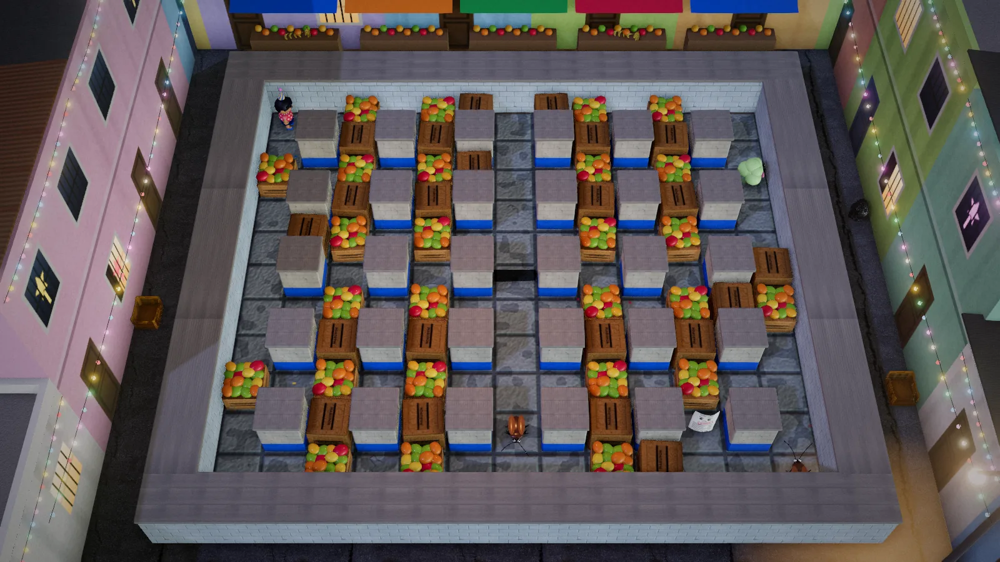

Bagong Taon
The classic maze-bomber, New Year's Eve style

ArcadeKeyboard · TouchFree, in the browser
Play Bagong TaonAbout the game
Bagong Taon means New Year. It is the last night of December in the barangay, and before the clock strikes twelve, Totoy has to drive the malas (bad luck) out of every kanto (street corner). The malas have taken odd shapes: an old utang resibo (an IOU receipt), a flying ipis (cockroach), a bloated kabag (the gas in your stomach), a calendar ghost and a black cat.
Totoy's only tool is the Bawang, a cartoon firecracker shaped like a garlic bulb, which lights its own wick. Every malas you shoo away shoots up into the sky as a kwitis (skyrocket), so the sky fills up as midnight gets closer.
There are eight stages, one for each hour: Aling Bining's sari-sari store at 6 PM, the looban (inner alleys), the talipapa (small wet market), the covered court, a brownout, Lola's bakuran (backyard), the plaza at 11:30, and finally, at 11:59, Ang Lumang Kalendaryo, the free grocery-store wall calendar that refuses to turn to January. Between stages, Lola's media noche table gains another dish.
How to play
Walk through the maze and drop a Bawang. After a short fuse it bursts in a plus shape, breaking wooden crates, chasing off any malas it touches, and setting off other Bawang in its path. Bawang that go off together score double, then four times and eight times. Stay clear of your own blast: on Madali it only leaves Totoy sooty, but on the harder levels it costs a life.
Crates hide power-ups. Ubas (grapes) let you place one more Bawang at a time, Dalandan (orange) makes the blast reach farther, Bagong Sapatos (new shoes) speed you up, Sipa lets you kick a Bawang, Sinturon ni Hudas lets blasts pass through blocks, the Torotot (paper horn) freezes every malas, and Tikoy (sticky rice cake) gives a life. One crate hides a parol (star lantern), the exit. It lights up only after every malas is gone, so do not blast it while it is still dark.
Beat the old calendar and the barangay counts down from sampu (ten) to isa (one). Press the light button right at 12:00 and Totoy jumps.
- Keyboard: arrow keys or WASD move, Space, Enter, F or Q lights a Bawang, P pauses, M toggles sound.
- Phone and tablet: the on-screen D-pad and the big SINDI (light) button.
- Controller: D-pad or left stick, Cross or A to light, Start to pause.
- Tapatan (two players): on one keyboard, Totoy uses the arrows with Enter, Space or the slash key, and Neneng uses WASD with F or Q. Two controllers also work. First to three rounds wins.
Madali (easy), the default, gives five lives, slower malas and a preview of where each blast will reach. Katamtaman (medium) is the classic rules with a timer; let it run out and black cats come. Mahirap (hard) is two lives, faster malas and no preview.
Tips
- Before dropping a Bawang, know where you are going to hide. A side corridor out of the plus shape is safest.
- Grab Ubas early. More Bawang at once means more chain blasts, and chains are where the big scores come from.
- Each malas behaves differently. The cockroach charges down straight lanes, the kabag takes two hits, the ghost floats through crates, and the black cat dodges any Bawang about to go off.
- When a Torotot freezes the malas, use those seconds to set Bawang where they stand.
- Once you have found the parol, keep your blasts away from it.
Bagong Taon, a noisy Filipino New Year
Filipino families greet the new year loudly. The old belief is that noise drives away bad luck and evil spirits, so at midnight neighborhoods ring with firecrackers, torotot (cardboard party horns), banged pots and car horns. The kwitis and the garlic-shaped "bawang" firecracker are familiar names from that night. Many households keep other customs too: twelve round fruits on the table for a prosperous year, coins in pockets, polka dots on clothes, and the media noche, the midnight family feast. Children are told to jump at the stroke of twelve so they will grow taller, which is why Totoy jumps.
Firecrackers also cause injuries every year, and health campaigns ask families to make noise with torotot and pots instead. The game takes that side: no hands, lighters or burns are ever shown, and Lola reminds you before the first stage that the paputok belong in the game only. In real life, her advice is the torotot and the kaldero.